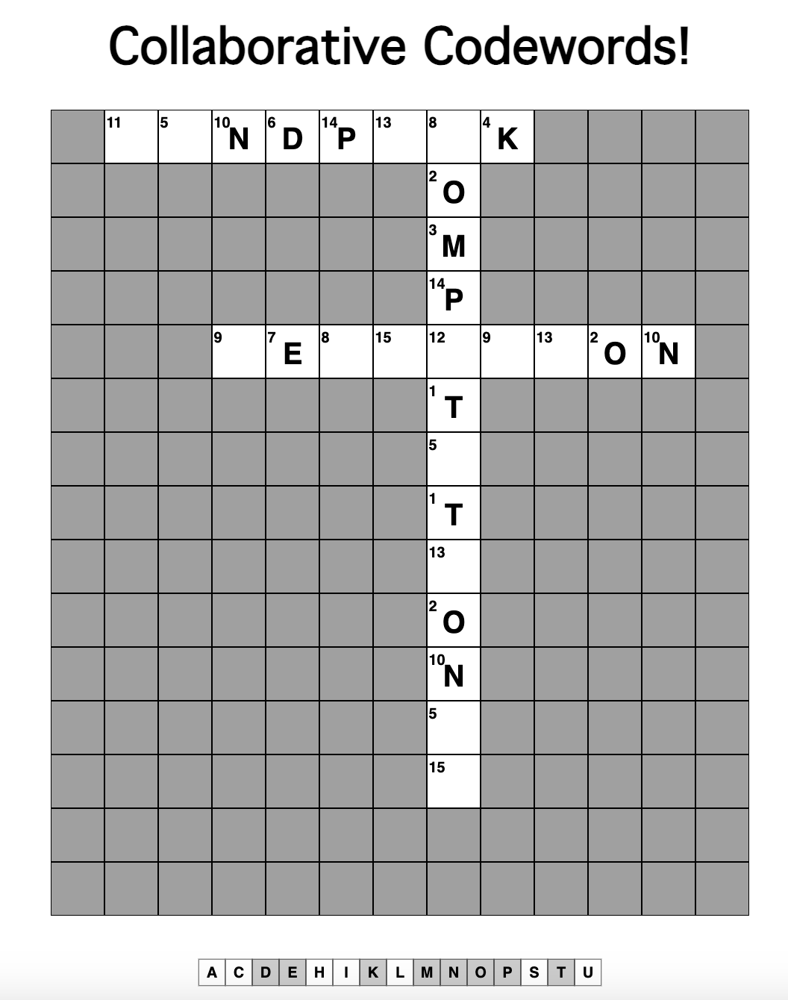

Collaborative
Codewords
Sam Johnson-Lacoss, Gwen Bradforth
Sam Johnson-Lacoss, Gwen Bradforth
Codewords, or Cipher Crosswords, hides a crossword behind a substitution cipher. Each letter is replaced by a number. Solve the puzzle by reversing the substitution!